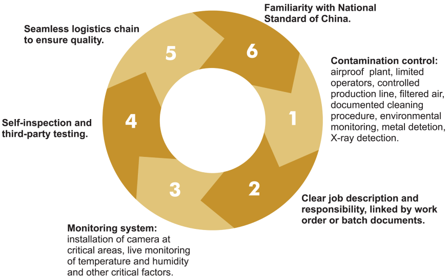
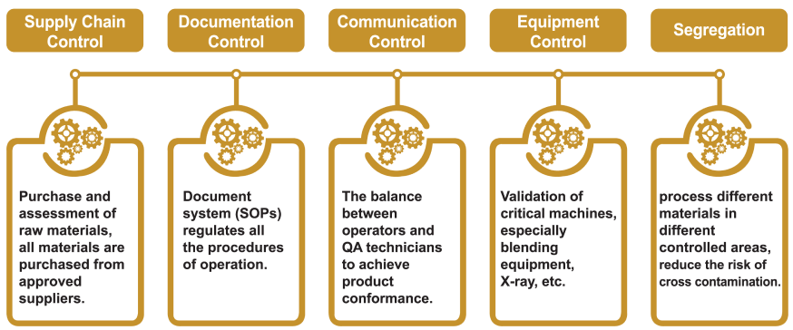

COWALA Quality
Our factory has been designed and built to meet strict hygiene standards, from air filtration systems to epoxy resin floors, stainless steel and machinery controls.
Our multi-level production facility allows product to be blended and gravity fed through the filling process, reducing handling and lessening contamination risk.
Our Quality Assurance Management Programme assures raw materials and packaging inputs have been rigorously tested, and that products can be traced and controlled at all stages of manufacture.
We are proud of our quality system and conduct formal reviews of our processes and procedures on a regular basis.
Our Quality Management System

Highlight of QA System
